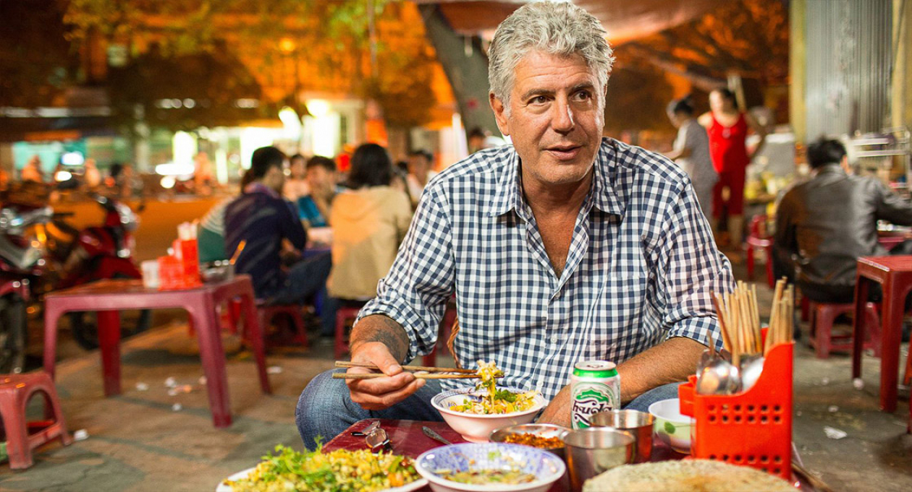

Anthony Bourdain
(1956-2018)

Anthony Bourdain eating Com Hen in Vietnam, one of his "favorite places on earth."
Anthony Bourdain was a celebrity chef, a traveler, and an author.
He rose to fame after he wrote Kitchen Confidential: Adventures in the Culinary Underbelly in 2000.
This book showed what really was happening in American kitchens, and he didn't try to romanticize it.
He was famous for his honesty, and respect for the common worker.
He soon started a world-travel show highlighting international cuisine in 2002, and continued doing similar shows until his death in 2018.
He died in France, while filming for his show Parts Unknown.
See more about Anthony Bourdain here at his Wikipedia page